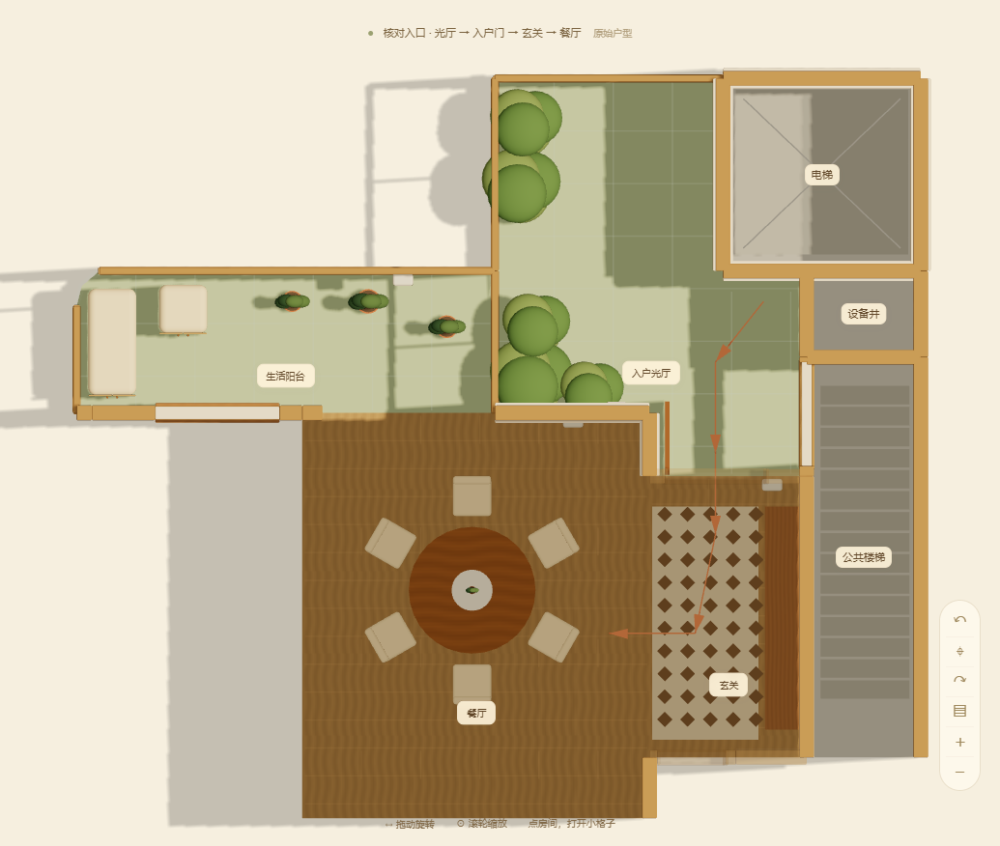

把入户光厅和进门的地方对齐
左侧是你提供的原始户型图局部，右侧是 V05 实际模型的正投影俯视截图。两边方向一致；箭头表示从光厅穿过入户门，再经玄关向左进入餐厅。
01 / 原始户型图 · 入口局部02 / V05 模型 · 入口核对视角
本次修正：恢复绕电梯井的不规则光厅和门前平台；入户门移回原图位置；玄关左侧向餐厅敞开；区分楼梯门与入户门；取消无原图依据的阳台—光厅直通门。
打开可旋转、可进入的 V05 小屋 →
墙线与门洞依据原图描摹，原图未标注的门窗高度和家具细节仍为 Q 版示意；本页不代表施工测量图。完整轮廓叠加可在小屋右上角「户型依据」查看。